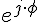

Классический алгоритм дискретного преобразования
 - оператор поворота на угол
 - ф-ция угла поворота где - угловая скорость
- ф-ция угла поворота где - угловая скорость
Сумма произвольного кол-ва синусоидальных составляющих с любыми амплитудами/фазами но одной частотой приводит к формированию одной гармонической составляющей
Найти книжку Юкиосато - "Цифровая обработка сигналов. Первые знакомства"